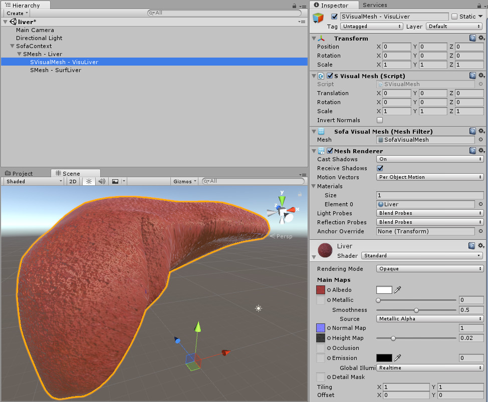
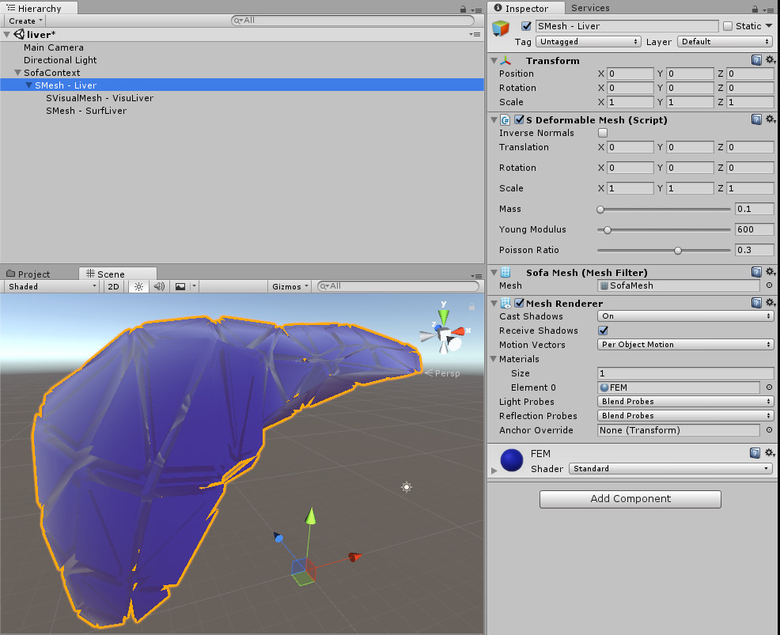
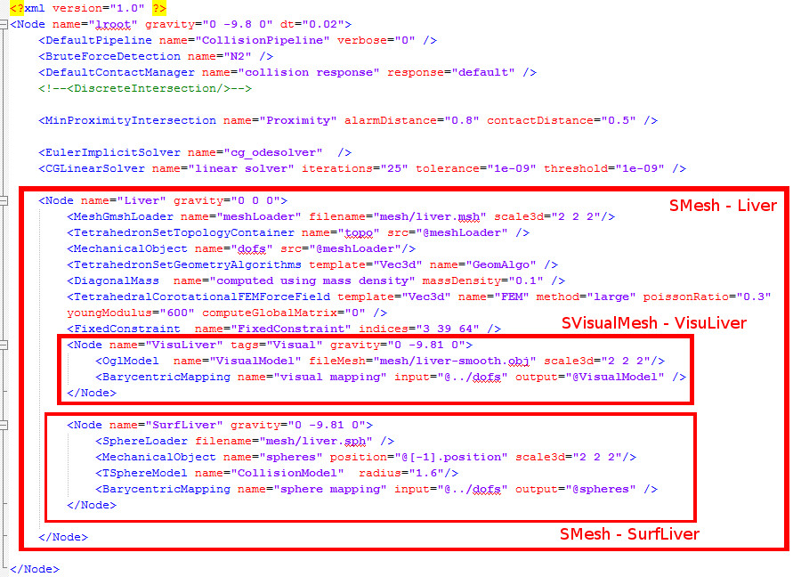

SOFA simulation scene parsing
SofaContext creation
The second approach is to load an existing Sofa simulation scene inside a SofaContext. This is an XML scene with .scn extension.As in previous section, the first step is always to create the object: SofaContext. This Unity GameObject represent the Sofa simulation root object.
All other object to be simulated in Sofa will be child of this Root object.
The inspector of the SofaContext gameObject allows to change the gravity in the scene as well as the simulation timestep. Those values won't be loaded from the Sofa scene.
Then use the Load Scene button to import a file.

It is Very important to not use the Transform parameters from unity GameObjects.
Otherwise the world geometric axis from Sofa and Unity won't match any more. All transform information should be done in the Sofa Simulation scene using the MechanicalObject component:
For example: MechanicalObject src="@loader" name="Volume" scale3d="20 20 20" rotation="140 180 0" translation="0 10 0"
The only parameter that can be used is the Unity scale of the SofaContext GameObject. Taking back the previous example, if the Sofa scene was defining a cube of size 1x1x1.
scale3d="20 20 20" will create a cube of size 20x20x20 in Unity.
Setting up in Unity the SofaContext Transform Scale to "0.05 0.05 0.05" will give back a cube of size 1x1x1 in Unity world.
Last thing important to notice is that Unity and Sofa have the X axis inverted. Thus to have the same view of the scene from Sofa and Unity, Scale "-1 1 1" should be applyed in the SofaContext.
SOFA scene parsing
Every node of the Sofa scene will be transposed as either a SDeformableMesh, SRigidMesh or a SVisualMesh.
As in first approach, SDeformableMesh object are modelized with Finite Element Method and have physical properties whereas SRigidMesh only collide. SVisualMesh provides a mapping to SOFA VisualModel. It can represent either a simulated mesh or only a 3D visual object. Each GameObject will have its own Mesh Renderer. See the Liver example below:
|  |
 |
|
|
|
SOFA scene writting rules
To decompose the Sofa simulation scene into Unity GameObject, it is important to follow several rules while writting the *scn file.
To have a SDeformableMesh Object you should have a < Node /> including a MechanicalObject as well as a FEM, topology and a mass.
The OglModel should be in another < Node /> to have a SVisualMesh object. Thus, every < Node /> with only a OglModel will be mapped as a SVisualMesh whereas every node with only a MechanicalObject and a topology will be mapped as a SRigidMesh.
Do not hesitate to have a look at the *.scn files inside the SofaUnity/Scenes/SofaScenes/ to have examples corresponding at the SofaUnity demo scenes.
Here is the Sofa simulation scene example of the Liver from above.
